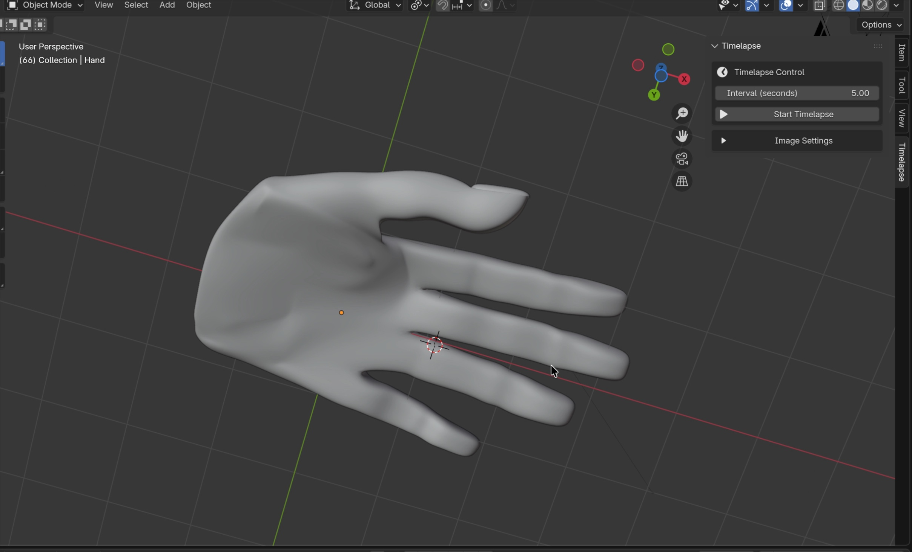

Hand-Modellierung
Im dritten Semester bestand im Modul 3D-Modellierung die gestalterische Aufgabe darin, die eigene Hand als dreidimensionales Objekt in Blender detailgetreu nachzubauen. Der Schwerpunkt lag auf sauberer Mesh-Topologie, anatomischen Proportionen, fließenden Edge-Loops an Gelenken und Fingerknöcheln sowie präzise ausgearbeiteten Fingernägeln und Daumenansätzen.


